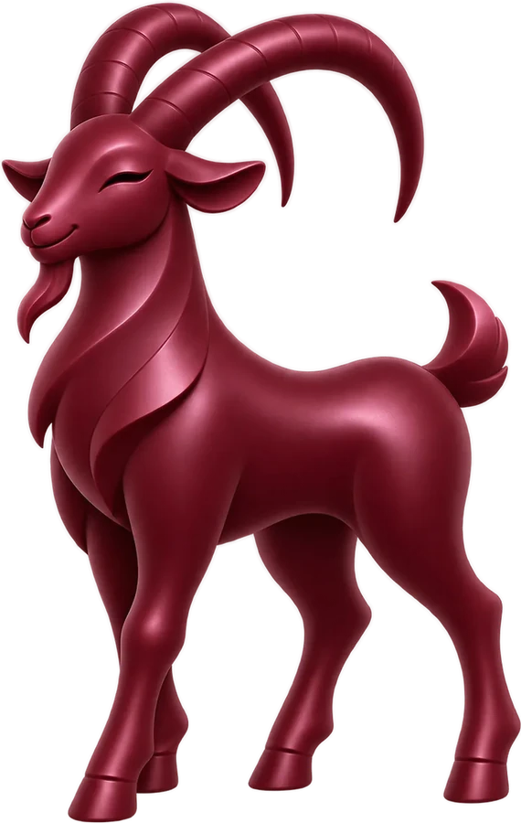
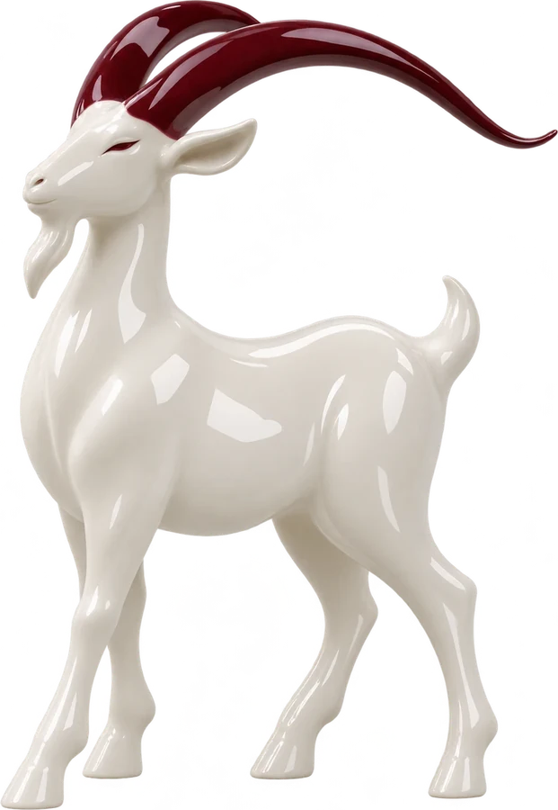

Прогноз на рік
799грн
Усі шість напрямків життя на 2027 рік.
Особистий прогноз на рік Вогняної Кози за Вашою датою народження.

Розрахунок за Вашою датою народження. Він показує головні теми року, Ваші сильні сторони і сценарії, що повторюються, і підказує, де цього року головне: робота, стосунки чи Ви самі.

Помісячний прогноз покаже, коли настає кожен період саме у Вас.
діяти
Для запусків, ініціативи й нових знайомств.
накопичувати
Для навчання, відпочинку й фінансового резерву.
переглянути
Щоб завершити зайве і не поспішати з ризиком.
Яка головна тема мого року і що варто врахувати?
Як діяти і які свої таланти розвивати?
Через що зростатиме дохід і що його гальмує?
Що зміниться у стосунках, у парі чи в пошуку?
Що забирає сили і як відновлюватися?
Що почати, що завершити і яких помилок не повторювати?
Визначте пріоритети вже зараз і отримайте план, до якого повертатиметеся весь рік. Саме для цього я створила прогностику.
Аліна Грицаєнко

Від картини року до особистого розбору зі мною.
Усі шість напрямків життя на 2027 рік.
Окремий прогноз на кожен місяць: коли діяти, а коли відновлюватися.
Річний і помісячний прогнози разом.
Повний прогноз і особистий зідзвон зі мною на 30–45 хвилин.
почніть рік
Після оплати бот «Люсі» в Telegram попросить дату народження і надішле Ваш прогноз.
Обрати свій прогноз